Công cụ tìm đường thẳng AI chủ yếu nhắm đến vấn đề mất nhiều thời gian điều chỉnh tham số bắt biên cho vật liệu có màu sắc khác nhau, đồng thời giải quyết điểm đau là trong các trường hợp bị nhiễu bởi vết dao, mài mòn, cong vênh, khi hệ thống quang học không có phương án hiệu quả để cải thiện chất lượng ảnh, nếu dùng công cụ tìm đường thẳng nâng cao hiện có thì cần bổ sung rất nhiều cơ chế chống lỗi mới có thể tương thích với tất cả vật liệu. Vì vậy, công cụ sử dụng thuật toán phát hiện bằng học sâu để đạt được hiệu quả tìm đường thẳng ổn định.
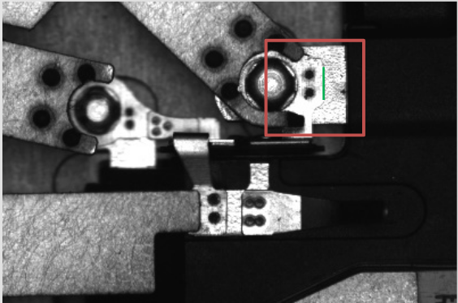
Quy trình tổng thể của công cụ tìm đường thẳng AI chủ yếu gồm hai phần: huấn luyện và thực thi. Phần huấn luyện xác định model tìm đường thẳng AI; phần thực thi sẽ dựa trên model đã huấn luyện để suy luận trên ảnh mục tiêu và thu được kết quả tìm đường thẳng.
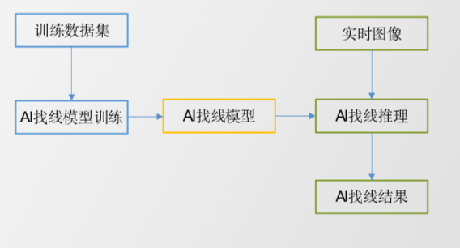
Công cụ tìm đường thẳng AI được dùng trong các kịch bản có nhiễu do vết dao, mài mòn, cong vênh và hệ thống quang học không có phương án hiệu quả để cải thiện chất lượng ảnh, giúp đạt được hiệu quả tìm đường thẳng ổn định, nhanh và dễ sử dụng.
Quy trình thực thi công cụ: thêm công cụ→liên kết đầu vào→cấu hình đầu vào ảnh (bao gồm model AI)→nhập ROI→thiết lập thuộc tính→thực thi tìm đường thẳng→hiển thị kết quả và cung cấp cho các công cụ khác sử dụng.
Cách 1, có thể nhấp chuột phải vào sơ đồ quy trình-》“Mới”-》“Công cụ AI”-》“Công cụ tìm đường thẳng AI”
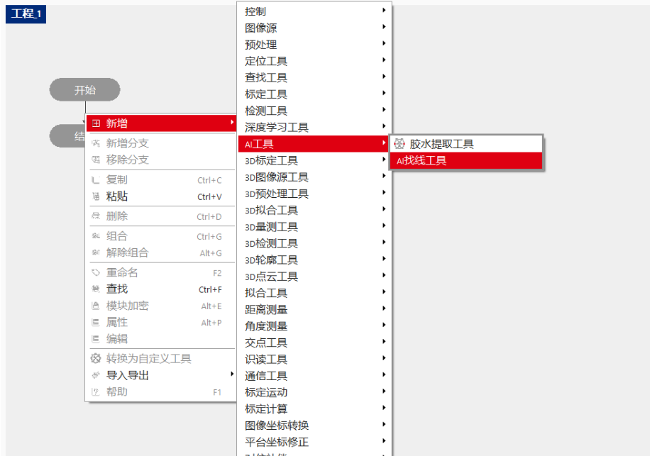
Cách 2, “Bảng điều khiển chính”-》“Hộp công cụ”-》“Công cụ AI”-》“Công cụ tìm đường thẳng AI”
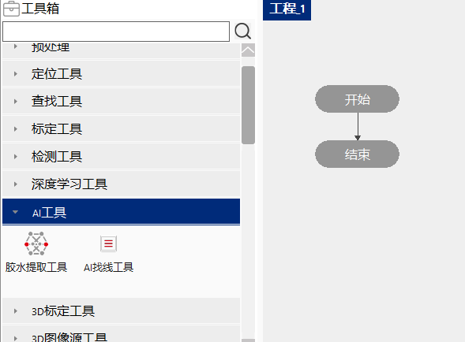
Nhấp đúp vào công cụ, trong cửa sổ bật lên cấu hình ảnh đầu vào, cấu hình đường dẫn model, nhập vùng ROI
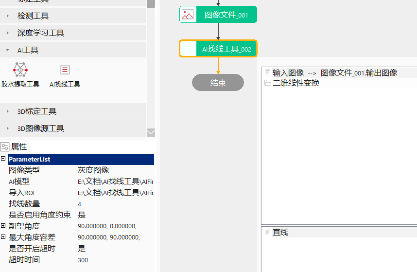
“Trang chính”-》cửa sổ “Thuộc tính”
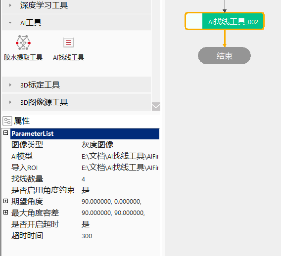
Kéo vùng tìm kiếm trong giao diện Edit, công cụ thực thi
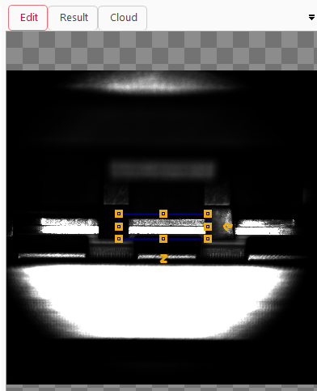
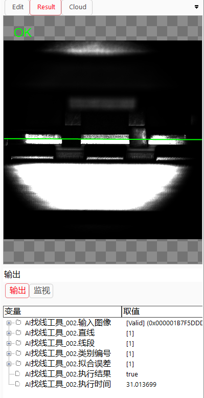
Kéo “AI找线工具_002” vào giao diện View (cần thêm trước), tích chọn nội dung cần chọn, thông thường chỉ cần chọn “Ảnh đầu vào” và “Đường thẳng” để hiển thị nhanh.
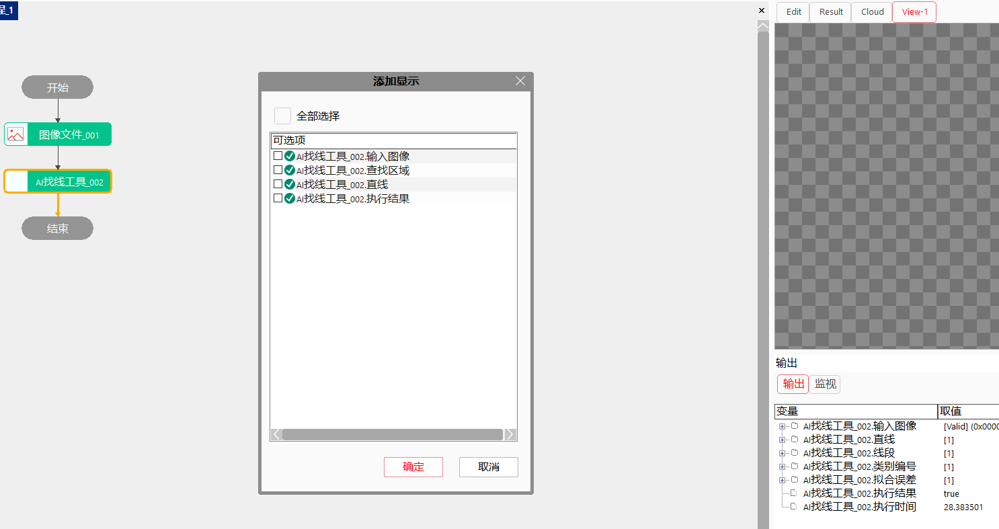
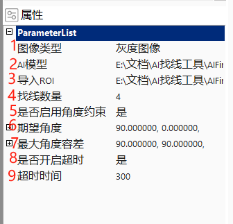
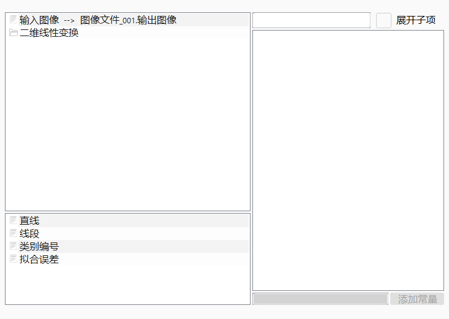
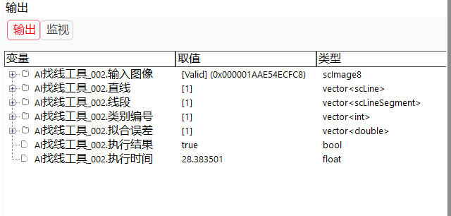
| No | Tên tham số | Kiểu tham số | Mô tả tham số | Cách thiết lập | Giá trị thường dùng |
|---|---|---|---|---|---|
| 1 | Loại ảnh | GeOperationImageType | Loại ảnh đầu vào, ảnh xám và ảnh RGB. | Chọn từ danh sách thả xuống | eitInputGray |
| 2 | Model AI | string | Model tìm đường thẳng AI đã huấn luyện. | Chọn tệp để nhập | NA |
| 3 | Nhập ROI | string | Có thể nhập ROI đã huấn luyện | Nhập giá trị, biểu thức, script | NA |
| 4 | Số lượng đường thẳng cần tìm | int | Số lượng đường thẳng cần tìm khi huấn luyện model, model hỗ trợ tối đa tìm 4 đường thẳng | Nhập giá trị, biểu thức, script | 4 |
| 5 | Có bật ràng buộc góc hay không | bool | Khi bật ràng buộc góc, công cụ sẽ ràng buộc góc của đường thẳng đầu ra theo góc kỳ vọng và dung sai góc tối đa đã thiết lập. | Chọn từ danh sách thả xuống, biểu thức, script | Không |
| 6 | Góc kỳ vọng | std::vector |
Góc đường thẳng lý tưởng của người dùng, phạm vi là [0,180], chiều kim đồng hồ là dương, kích thước vector không được rỗng hoặc vượt quá 4 | Nhập giá trị, script | 0 |
| 7 | Dung sai góc tối đa | std::vector |
Phạm vi sai lệch góc tối đa mà người dùng cho phép so với góc kỳ vọng, phạm vi là [0°,90°],kích thước vector không được rỗng hoặc vượt quá 4 | Chọn từ danh sách thả xuống | 10 |
| 8 | Có bật timeout hay không | bool | Có bật timeout hay không | Chọn từ danh sách thả xuống | Không |
| 9 | Thời gian timeout | int | Thời gian timeout(đơn vị ms), phạm vi [0,100000] | Nhập giá trị, biểu thức, script | 300 |
| Tham số đầu vào | Kiểu đầu vào | Mô tả tham số | Loại công cụ đầu vào | Đơn vị |
|---|---|---|---|---|
| Ảnh đầu vào | scImage8 | Ảnh đầu vào dùng để nhận dạng thời gian thực, ảnh xám. | Nguồn ảnh | NA |
| Ảnh đầu vào RGB | scImage24 | Ảnh đầu vào dùng để nhận dạng thời gian thực, ảnh màu. | Nguồn ảnh | NA |
| Biến đổi tuyến tính 2D | scPlanarLinearTransform | Kết quả biến đổi tuyến tính 2D định vị đầu vào, dùng để biến đổi vùng tìm kiếm tương ứng theo kết quả đó | Công cụ định vị | NA |
| Tham số đầu ra | Kiểu đầu ra | Mô tả tham số | Đơn vị |
|---|---|---|---|
| Đường thẳng | vector |
Kết quả đường thẳng. | NA |
| Đoạn thẳng | vector |
Kết quả đoạn thẳng tìm được. | NA |
| Góc | vector |
Góc của đường thẳng | NA |
| Mã loại | vector |
Mã loại. | NA |
| Sai số fitting | vector |
Sai số fitting. | NA |
| Tham số đầu ra | Kiểu đầu ra | Mô tả tham số | Đơn vị |
|---|---|---|---|
| Ảnh đầu vào | scImage8 | Chiều rộng, chiều cao, kích thước pixel của ảnh đầu vào. | NA |
| Ảnh đầu vào RGB | scImage24 | Chiều rộng, chiều cao, kích thước pixel của ảnh màu đầu vào. | NA |
| Đường thẳng | vector |
Kết quả đường thẳng, kích thước là số lượng đường thẳng tìm được. | NA |
| Đoạn thẳng | vector |
Kết quả đoạn thẳng tìm được, kích thước là số lượng đường thẳng tìm được. | NA |
| Góc | vector |
Giá trị góc của đường thẳng, kích thước là số lượng đường thẳng tìm được | NA |
| Mã loại | vector |
Mã loại, kích thước là số lượng đường thẳng tìm được. | NA |
| Sai số fitting | vector |
Sai số fitting, kích thước là số lượng đường thẳng tìm được. | NA |
| Kết quả thực thi | bool | Kết quả thực thi công cụ. | NA |
| Thời gian thực thi | double | Thời gian thực thi công cụ. | ms |
```python
A = GvTool.GetToolData(“AI找线工具002.二维线性变换”) D = GvTool.GetToolData(“AI找线工具002.查找区域”) G = GvTool.GetToolData(“AI找线工具002.找线数量”) H = GvTool.GetToolData(“AI找线工具002.是否启用角度约束”) I = GvTool.GetToolData(“AI找线工具002.期望角度”) J = GvTool.GetToolData(“AI找线工具002.最大角度容差”) K = GvTool.GetToolData(“AI找线工具002.是否开启超时”) L = GvTool.GetToolData(“AI找线工具002.超时时间”) M = GvTool.GetToolData(“AI找线工具002.直线”) N = GvTool.GetToolData(“AI找线工具002.线段”) O = GvTool.GetToolData(“AI找线工具002.类别编号”) P = GvTool.GetToolData(“AI找线工具002.拟合误差”) Q = GvTool.GetToolData(“AI找线工具002.执行结果”) R = GvTool.GetToolData(“AI找线工具002.执行时间”) S = GvTool.GetToolData(“AI找线工具_002.角度”) print(A,D,G,H,I,J,K,L,M,N,O,P,Q,R,S)
GvTool.SetToolData(“AI找线工具002.找线数量”,4) GvTool.SetToolData(“AI找线工具002.是否启用角度约束”,false) GvTool.SetToolData(“AI找线工具002.是否开启超时”,false) GvTool.SetToolData(“AI找线工具002.超时时间”, 1000) ```
Tham khảo “\Samples\AI找线工具.gvp”。